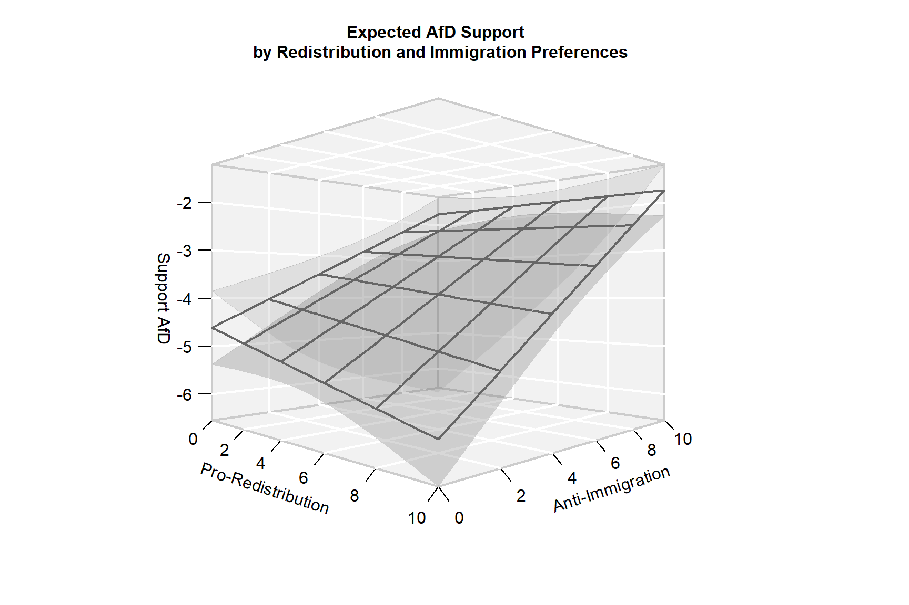

Doing OLS by hand
We have all used the ordinary least squares estimator for linear regression. But have you ever implemented it by hand? This will be your task for this exercise!
At the same time, this exercise will be a segue into Session 2 of our workshop, which focuses on generalized linear models.
Note that we will not derive the OLS estimator by hand. Instead, you will get the derivation and translate it into R code.
The exercise consists of two parts:
Part 1
- Data preparation
- Estimation
Part 2
- Processing (“Prediction”)
- Visualization
- Bonus: Validity checks
Notes
- This exercise may be challenging at times, but I have supplied numerous hints for you.
- If you get stuck, feel free ask me for additional hints.
- You can view the solutions, though I suggest you try to figure it out on your own first.
- If serial tasks rely on objects you are prompted to generate, the
correct objects will be pre-loaded in all subsequent steps (provided you
work in the
learnrenvironment).
The linear model
The linear model is a special case of generalized linear models (more on this in the next session).
The OLS estimator for multivariate regression analyses requires calculations in matrix form.
Model specification:
Likelihood: \[\mathbf{y}_i \sim \text{N}(\mu_i, \sigma^2) \text{ for all }i = 1,...N\]
Systematic component: \[\mu_i = \mathbf{x}_i^{\prime} \beta \text{ for all }i = 1,...N\]
Four way to denote the linear model formula
- Scalar form: \[y_i = \beta_1 x_{i1} + \beta_2 x_{i2} + \beta_3 x_{i3} + \epsilon_i \text{ for all } i=1,...,N\]
- Row-vector form: \[y_i = \mathbf{x_i^{\prime}} \mathbf{\beta} + \epsilon_i \text{ for all } i=1,...,N\]
- Column-vector form: \[\mathbf{y} = \beta_1 \mathbf{x_{1}} + \beta_2 \mathbf{x_{2}} + \beta_3 \mathbf{x_{3}} + \mathbf{\epsilon}\]
- Matrix form: \[\mathbf{y = X \beta + \epsilon}\]
What the matrix-form looks like in detail
\[\underbrace{\begin{bmatrix} y_1 \\ \vdots \\ y_{N} \end{bmatrix}}_{N \times 1} = \underbrace{\begin{bmatrix} 1 & x_{1, 2} & \cdots & x_{1, K} \\ \vdots & \vdots & \ddots & \vdots \\ 1 & x_{N, 2} & \cdots & x_{N, K} \end{bmatrix}}_{N \times K} \underbrace{\begin{bmatrix} \beta_1 \\ \beta_2 \\ \vdots \\ \beta_K \end{bmatrix}}_{K \times 1} + \underbrace{\begin{bmatrix} \epsilon_1 \\ \vdots \\ \epsilon_{N} \end{bmatrix}}_{N \times 1}\]
The matrix form is 100% equivalent to the other three forms
\[\underbrace{\begin{bmatrix} y_1 \\ \vdots \\ y_{N} \end{bmatrix}}_{N \times 1} = \underbrace{\begin{bmatrix} \beta_1 \cdot 1 + \beta_2 \cdot x_{1, 2} + \cdots + \beta_K \cdot x_{1, K} \\ \vdots \\ \beta_1 \cdot 1 + \beta_2 \cdot x_{N, 2} + \cdots + \beta_K \cdot x_{N, K} \\ \end{bmatrix}}_{N \times 1} + \underbrace{\begin{bmatrix} \epsilon_1 \\ \vdots \\ \epsilon_{N} \end{bmatrix}}_{N \times 1}\]
Inputs and outputs
Inputs (data)
- A length-\(N\) outcome vector \(\mathbf{y}\)
- An \(N \times K\) model matrix \(\mathbf{X}\), which contains a leading column of 1’s to multiply the intercept
Primary outputs (estimands, parameters)
- A length-\(K\) coefficient vector \(\beta\)
- A real, strictly positive variance parameter \(\sigma^2\)
Secondary outputs (transformed parameters)
With estimates \(\hat{\beta}\) and \(\hat{\sigma}^2\), we can directly calculate the variance-covariance matrix of the coefficients, \(\hat{\mathbf{\Sigma}}\). This variance-covariance matrix gives us the parameters that define the joint multivariate normal sampling distribution of our coefficients: \[\hat{\beta} \sim \text{MVN}(\hat{\beta}, \hat{\mathbf{\Sigma}})\] Some things to note:
- The diagonal of this matrix holds the variances of our coefficients.
- The square root of these variances gives us their standard errors.
- The off-diagonals give us the covariances of any pair of coefficients.
- The variance-covariance matrix is of dimensions \(K \times K\).
- The variance-covariance matrix is symmetrical; thus \(\Sigma_{a,b} = \Sigma_{b, a}\) for any \(a, b \in \{1,...,K\}\).
Data preparation
Context
The exercise chunk has pre-loaded the data frame gles,
which contains three variables from the 2017 German Longitudinal
Election Study. We want to model respondents’ support for the AfD
(sup_afd, measured on an 11-point scale ranging from -5 to
5) as a function of respondents’ pro-redistribution preferences
(se_self) and anti-immigration preferences
(la_self), including a multiplicative interaction term for
the two predictors (se_self:la_self).
Both se_self and la_self are measured on
11-point scales:
se_selfranges from values (0) “less taxes and deductions, even if that means less social spending” to (10) “more social spending, even if that means more taxes and deductions”.la_selfranges from values (0) “facilitate immigration” to (10) “restrict immigration”.
The model formula is given by \[\mathtt{sup\_afd} = \beta_1 + \beta_2 \mathtt{se\_self} + \beta_3 \mathtt{la\_self} + \beta_4 \mathtt{se\_self \times la\_self} + \epsilon\]
Prompt
The task is simple: We need the vector \(\mathbf{y}\) and the matrix \(\mathbf{X}\)
Hints:
- You can extract any column from a data frame using the
$operator. - Check out
model.matrix(), which takes the right-hand of a model formula as input and returns a complete model matrix.
y <- ...
X <- ...y <- gles$sup_afd
X <- model.matrix(~ se_self + la_self + se_self:la_self, data = gles)Estimation
The coefficient vector
You have probably seen this before: The OLS estimator for \(\beta\) is given by \[\hat{\beta} = \mathbf{(X^{\prime}X)^{-1}X^{\prime}y}\]
Let’s translate this into R! Hints:
t()transposes matrices/vectorssolve()inverts matrices%*%multiplies matrices vectors
b <- ...b <- solve(t(X) %*% X) %*% t(X) %*% yThe variance parameter
The estimator for the variance parameter \(\sigma^2\) is \[\hat{\sigma}^2 = \frac{\mathbf{e}^{\prime}\mathbf{e}}{N-K}\]
Here, \(\mathbf{e}\) is a length-\(N\) vector of residuals, where \(\mathbf{e} = \mathbf{y} - \mathbf{X}\beta\), which is the same as \(\mathbf{e} = \mathbf{y} - \hat{\mathbf{y}}\).
For this task, first calculate \(\mathbf{e}\). Then, calculate \(\hat{\sigma}^2\). After this, you can calculate the variance-covariance matrix, which is given by \[\hat{\mathbf{\Sigma}} = \hat{\sigma}^2 \mathbf{(X^{\prime}X)^{-1}} \]
Hints:
- Remember that X is of dimensions \(N
\times K\). Try
dim(),nrow(), andncol. - Check the structure (
str()) ofe. - Check the
class()ofsigma2. You want it to be of a vector of classnumeric.
e <- ...
N <- ...
K <- ...
sigma2 <- ...
Sigma <- ...e <- y - X %*% b
N <- nrow(X)
K <- ncol(X)
sigma2 <- t(e) %*% e / (N - K)
Sigma <- as.vector(sigma2) * solve(t(X) %*% X)Processing (prediction)
With \(\hat\beta\) and \(\hat{\mathbf{\Sigma}}\), we have knowledge of the full sampling distribution for \(\hat\beta\). This allows us to also get confidence intervals for any post-estimation quantities of interest that are functions of parameters and data.
We are going to focus on expected values: \(\mathbb{E}[y|\mathbf{\mathbf{x}^{\ast}}] =
\mathbf{x}^{\ast\prime}\hat\beta\). The vector \(\mathbf{x}^{\ast}\) can contain any
(reasonable) scenario of covariate values. Here, we want to calculate
expected values over the full grid of values of se_self and
la_self.
How can we get it’s standard error? In OLS models, the variance of an expected value is given by
\[\mathbf{x}^{\ast \prime} \hat{\mathbf{\Sigma}} \mathbf{x}^{\ast}\]
Its square root gives the standard error.
Step 1: Define value sequences for the predictors
Remember that both predictors are measured on 11-point scales ranging
from 0 to 10. But that shouldn’t stop us from calculating at finer
gradations of the two scales. Define value sequences ranging from 0 to
10 in steps of 0.25 for both predictors (Hint: seq()) and
store them in the vectors below.
se_vals <- ...
la_vals <- ...se_vals <- seq(0, 10, .25)
la_vals <- seq(0, 10, .25)Step 2: Initialize a container
Before we start, let’s be clear what we want eventually: For every
value combination of se_vals and la_vals, we
want three estimates:
- The point estimate of the expected value, \(\mathbf{x}^{\ast \prime} \hat \beta\)
- The lower bound of its confidence interval, \(\mathbf{x}^{\ast \prime} \hat \beta + \Phi^{-1}(0.025) \sqrt{\mathbf{x}^{\ast \prime}\hat{\mathbf{\Sigma}} \mathbf{x}^{\ast}}\)
- The upper bound of its confidence interval, \(\mathbf{x}^{\ast \prime} \hat \beta + \Phi^{-1}(0.975) \sqrt{\mathbf{x}^{\ast \prime}\hat{\mathbf{\Sigma}} \mathbf{x}^{\ast}}\)
So our container must accommodate
length(se_vals) * length(la_vals) * 3L = 5043L values.
We could, of course, store these in a vector of length 5043. Or in
three matrices of dimensions 41$$41, which we could subsequently wrap in
a list. Let’s go for the most convenient solution, though: A
three-dimensional array of dimensions
dim = c(length(se_vals), length(la_vals), 3L). Let’s
initialize this object with NAs.
pred <- ...pred <- array(NA, dim = c(length(se_vals), length(la_vals), 3L))Step 3: Use a nested loop to fill the container
Hints:
- Your outer loop should loop through the elements of
se_vals(seeseq_along()). - Your inner loop should loop through the elements of
la_vals(seeseq_along()). - Define (overwrite) the vector
x_starat each iteration of the loop. Remember that our model matrix has four columns – you will need a corresponding vector element inx_star:- a 1 to multiply the intercept
- the \(i^{\text{th}}\) value of
se_self - the \(j^{\text{th}}\) value of
la_self - the product of the \(i^{\text{th}}\) value of
se_selfand the \(j^{\text{th}}\) value ofla_self
- Define (overwrite) the vector
std_errorat each iteration of the loop. Remember: You want this to be a scalar!
for (i in ...) {
for (j in ...) {
x_star <- c(...)
std_err <- ...
pred[i, j, 1] <- ...
pred[i, j, 2] <- pred[i, j, 1] + ...
pred[i, j, 3] <- pred[i, j, 1] + ...
}
}for (i in seq_along(se_vals)) {
for (j in seq_along(la_vals)) {
x_star <- c(1, se_vals[i], la_vals[j], se_vals[i] * la_vals[j])
std_err <- sqrt(as.vector(t(x_star) %*% Sigma %*% x_star))
pred[i, j, 1] <- x_star %*% b
pred[i, j, 2] <- pred[i, j, 1] + qnorm(.025) * std_err
pred[i, j, 3] <- pred[i, j, 1] + qnorm(.975) * std_err
}
}Visualization
Time for some shameless self-promotion: We are going to use my
regplane3D package to visualize the expected values of AfD
support as a joint function of socio-economic and immigration
preferences.
regplane3D::plane3D(
z = pred,
x = se_vals,
y = la_vals,
main = "Expected AfD Support \n by Redistribution and Immigration Preferences",
zlab = "Support AfD",
xlab = "Pro-Redistribution",
ylab = "Anti-Immigration",
xnlines = 6L,
ynlines = 6L
)
So, which substantive conclusions can we draw?
Bonus: Validity checks
Let’s check if we got everything right!
Estimate the model via lm() and extract the coefficient
vector and the variance-covariance matrix of the coefficients.
Then, use all.equal() with the option
check.attributes = FALSE to check if our estimates differ
from those generated via lm(). Note that you must supply
identical object types, so convert b to a
vector.
# Estimate model
est_lm <- lm(sup_afd ~ se_self + la_self + se_self:la_self, data = gles)
# Extract b and Sigma
b_lm <- coef(est_lm)
Sigma_lm <- vcov(est_lm)
# Check for equality (with minor tolerance)
all.equal(as.vector(b), b_lm, check.attributes = FALSE)
all.equal(Sigma, Sigma_lm, check.attributes = FALSE)